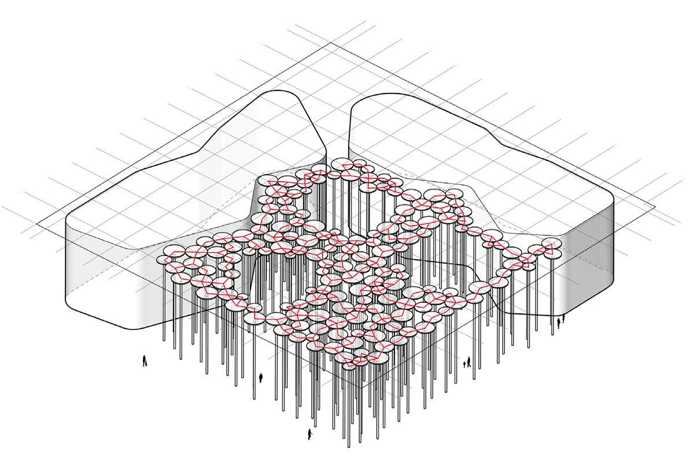
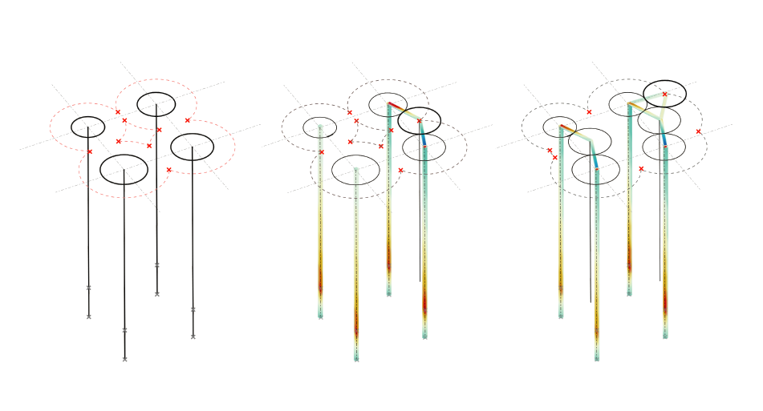

Sächsische Aufbaubank HQ
Designing a Forest of Columns
Design
Architect
ACME
My Role
Intern @ Knippers Helbig
On this project I developed a script to algorithmically generate the forest of columns making up the public space, based on structural and geometric constraints.
Knippers Helbig Team
Luiza Boechat
Year
2016
Status
Completed in 2021
External Links
The design for the new headquarters for SAB in Leipzig is an L-shaped building around a large public space. This space features a “forest of columns” rising 22m into the air.
A problem with this forest was that, due to a parking
garage beneath, only around 50 columns located on
a grid could be fixed at the base. The rest needed to
be supported by these through connections up top.
The geometry and topology was directly linked to the structural action and, with a desire to have no members
spanning between the columns, they needed to connect where they touch. As it was impossible to adjust an architectural layout
so that it would be structurally stable, the problem
needed a different approach.

To deal with the problem I helped develop a script that defined the column layout based on a structural logic and a certain set of parameters, following from the work of Luiza Boechat’s master thesis. The general logic and prototype for the script were worked out before my involvement, but I further developed the process and contributed by setting up a recursive gh-script. The script, based on the structurally fixed column locations, adds the additional ones one-by-one, trying to minimize the elastic energy of the system. I also added various control logics so that the final geometry could be controlled from an architectural point of view and applied this in the project setting, working together with the responsible architect to find a geometry that suited both sides.

The video below shows the process of "growing" the forest from the initial grid of fixed columns.